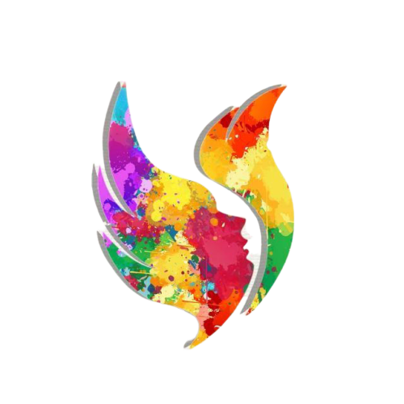

|

|
SAMYAK is the biggest techno-management fest in all of Andhra Pradesh, which sees a confluence of students from all over the nation.
It has a footfall of around 20,000 students every year.
Filled with colours, painting the skies with fun and frolic, this two-day fest drives home lessons of social responsibility apart from technical knowledge.
One can witness the sunrise beautified with events setting away with awe and exuberance silencing after cultural extravaganza. Now ten years old, this fest is all set to enthral and captivate with all its prominence.
|